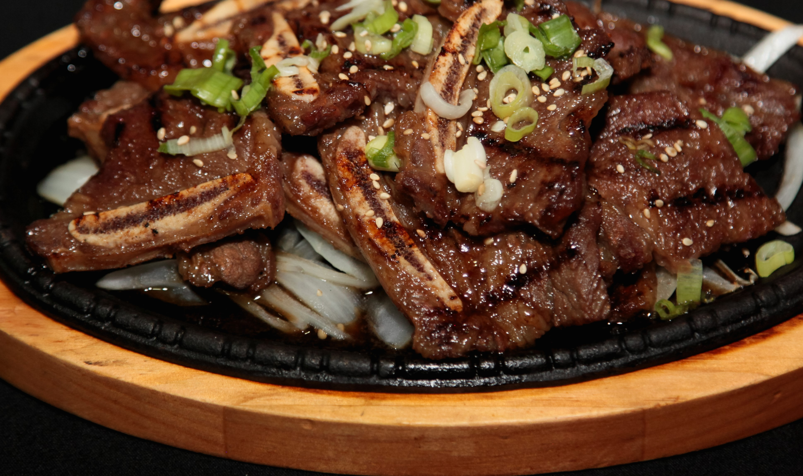

Galbi

Description
Korean-style short ribs can be found at most Asian markets. The cut, also known as "flanken," refers to a strip of
beef cut across the bone from the chuck end of the short ribs. Unlike American and European-style short ribs, which
include a thick slice of bone-in beef, Korean-style short ribs are cut lengthwise across the rib bones.
Ingredients
- 5 lbs Korean style beef short ribs
- 1 cup brown sugar, packed
- 1 cup soy sauce
- 1/2 cup water
- 1/4 cup mirin (rice wine)
- 1 small onion, peeled and finely grated
- 1 small Asian pear, peeled and finely trated
- 4 tablespoons minced garlic
- 2 tablespoons dark sesame oil
- 1/4 teaspoon black pepper
- 2 green onions, thinly sliced (optional)
Steps
Preparation:
- Sprinkle brown sugar over beef and mix them well to evenly coat
- Let sit at room temperature for 10 minutes while preparing marinade
- In a bowl, whisk together remainig ingrediens
- Transfer beef into a large sealable freezer bag (you may need 2)
- Add marinade, press out excess air from bags, and seal
- Turn the bag over several times to ensure beef is evenly coated
- Refrigerate for at least 4 hrs but preferable overnight
Cooking
- Heat gas or charcoal grill to medium-hot
- Drain excess marinade off beef
- Grill short ribs, turning once, to desired doneness, about 3 to 4 minutes per side
- Garnish wih thinly sliced green onions if desired
- Serve whole piece as a main course or cut into smaller pieces using kitchen shears for a starter or party nibble